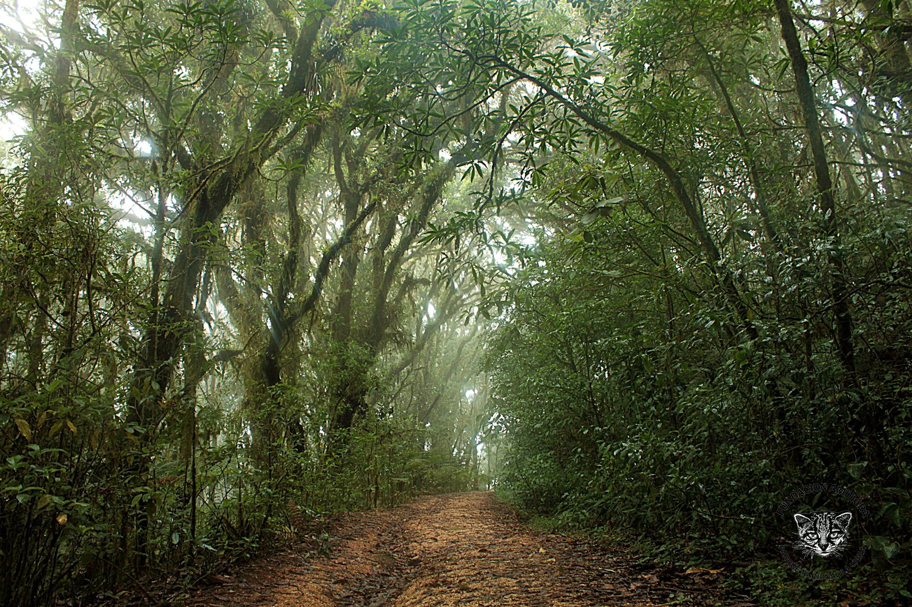
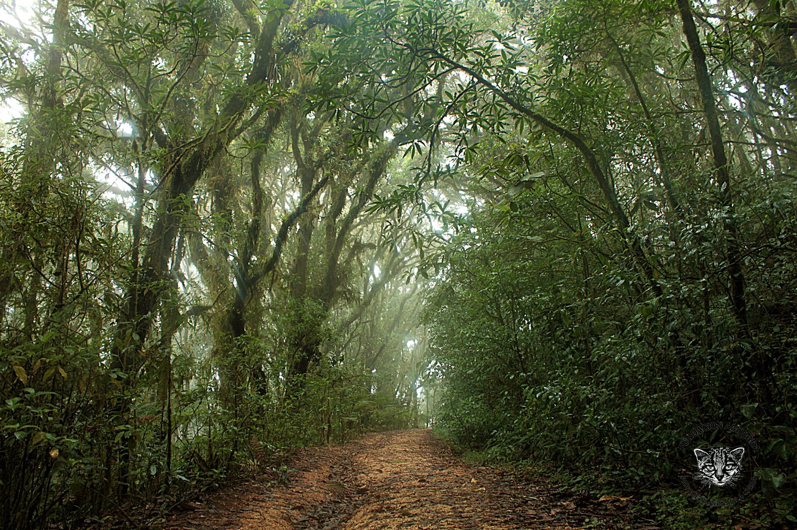

El Parque Nacional La Tigra, fue el primer parque nacional de la República de Honduras. Sus hermosos senderos están llenos de flora y fauna que logran impresionar a todos sus visitantes.
Está ubicado en el departamento de Francisco Morazán al noreste de Tegucigalpa y es un parque turístico con una gran biodiversidad que da vida a sus alrededores.
Historia del Parque Nacional La Tigra
Fue declarado como reserva natural en 1952 y es el primer parque nacional en la Republica de Honduras.
Cuenta la leyenda que todos los día un campesino salía de San Juancito y pasaba por las impresionantes tierras del bosque. Un día miró a una tigra con su cachorro y desde entonces el parque fue bautizado con el nombre de La Tigra.
Características
Este es la principal fuente generadora de agua dulce de Honduras y un importante hábitat para las especies nativas y migratorias de la zona.
Entre la fauna hay especies como mamíferos, anfibios, reptiles y aves. Además, se pueden observar tigrillos, guatusas, venados colas blancas, pumas y yaguarondis que viven dentro del parque.
Por otro lado, existen ocho senderos que permiten disfrutar de la impresionante naturaleza del lugar, entre ellos están:
Sendero Granadillas
Jucuara
Bosques Nublados
La Esperanza
Sendero Principal
La Cascada
La Mina